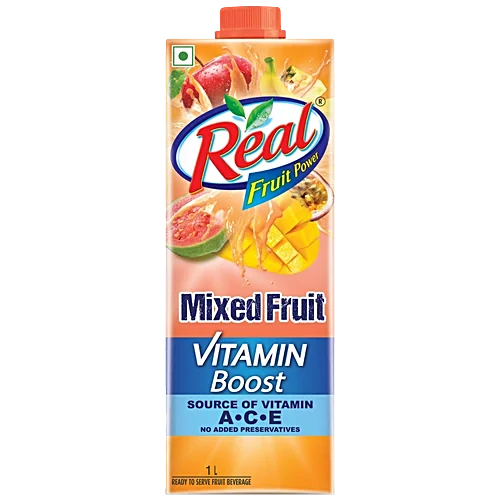

Real Fruit Juice(Mixed)
Dabur India Limited
Ghaziabad, U.P.
C
INGREDIENTS
- Water
- Fruit Pulp / Fruit Juice Concentrate (mixed fruits)
- Sugar
- Acidity Regulator (Citric Acid – INS 330)
- Stabilizers / Thickening Agents (permitted)
- Added Flavouring Substances (Natural / Nature-Identical)
- Antioxidant (Ascorbic Acid – INS 300)
- Permitted Preservatives (Class II)
Safe
-
Water
- Base ingredient
- Essential for hydration
-
Fruit Pulp / Fruit Juice Concentrate
- Derived from real fruits
- Provides some natural nutrients
-
Ascorbic Acid (INS 300)
- Vitamin C
- Acts as an antioxidant
Mild
-
Sugar
- Added sugar
- Should be limited if consumed often
-
Citric Acid (INS 330)
- Acidity regulator
- Excess may affect teeth or digestion
-
Stabilizers / Thickeners
- Improve texture and shelf life
- Safe but nutritionally unnecessary
Unsafe
-
Added Flavouring Substances
- No nutritional value
- Encourages artificial taste preference
-
Preservatives (Class II, if present)
- Legally permitted
- Not recommended for daily intake
Alternative
- Fresh Mixed Fruit Juice – Homemade, no preservatives
- Whole Fruits – Natural fibre and nutrients
- Fruit Smoothie – No added sugar
- Coconut Water – Natural hydration
- 100% Fruit Juice – Check label (no added sugar)